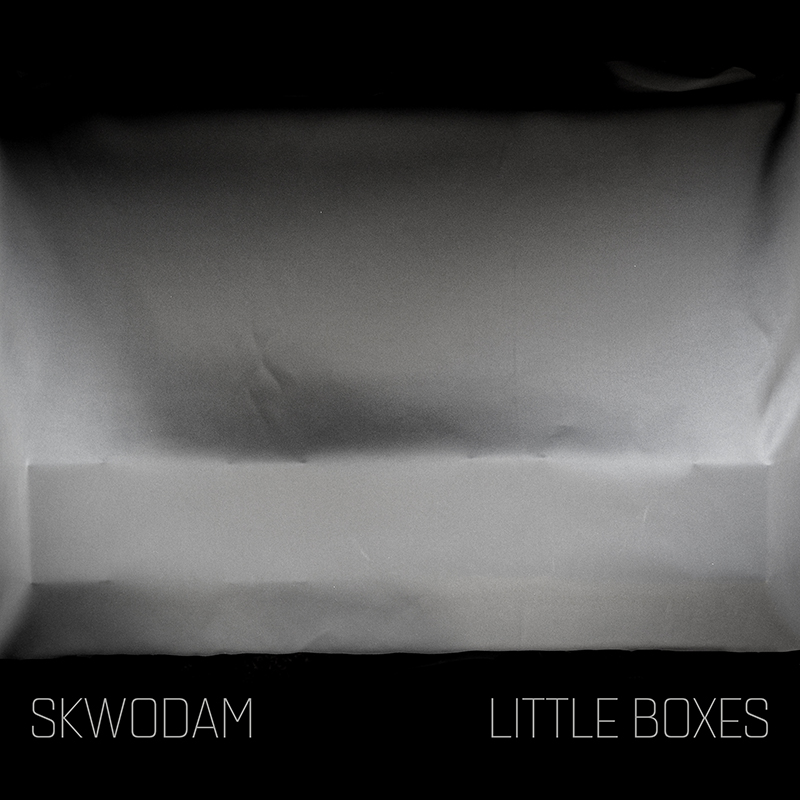
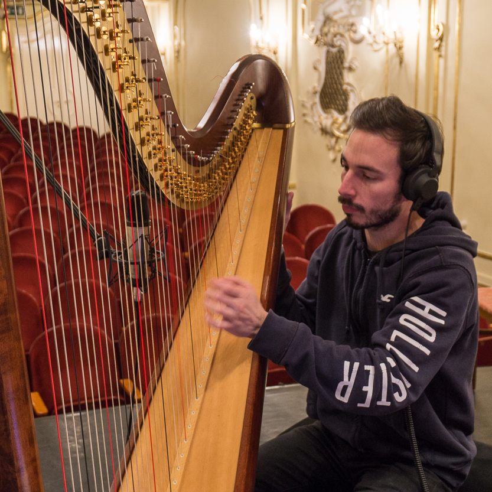
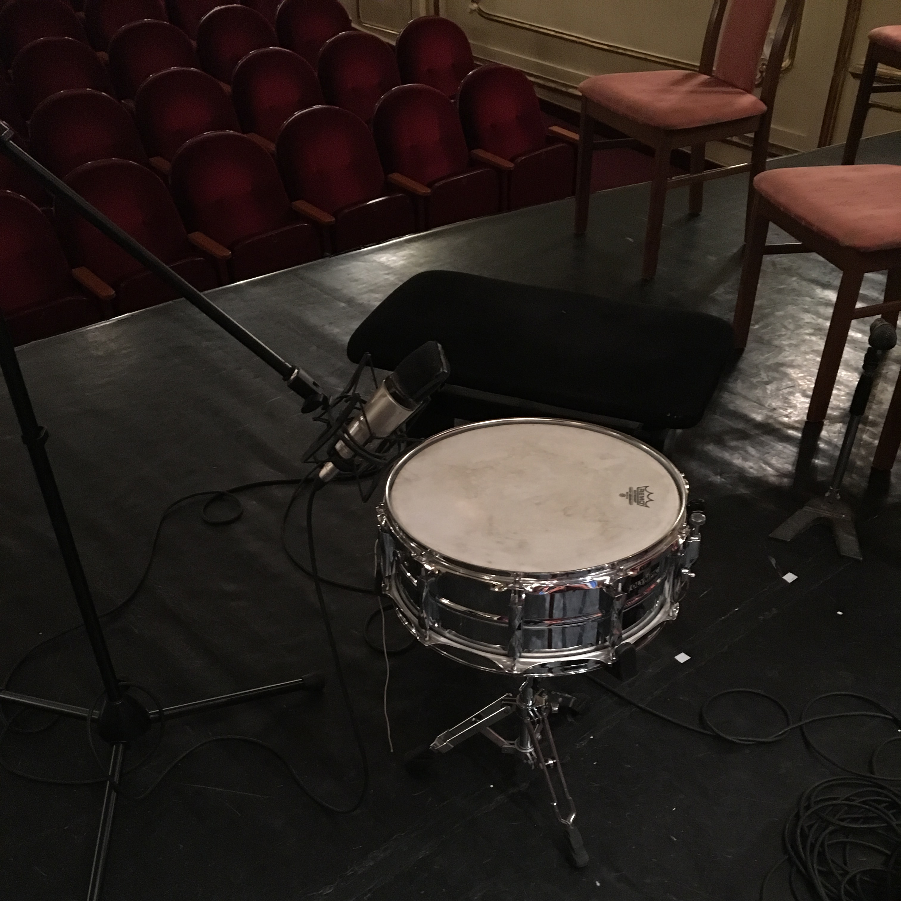
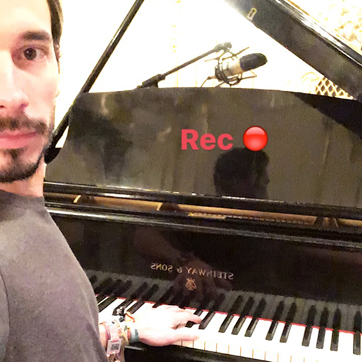
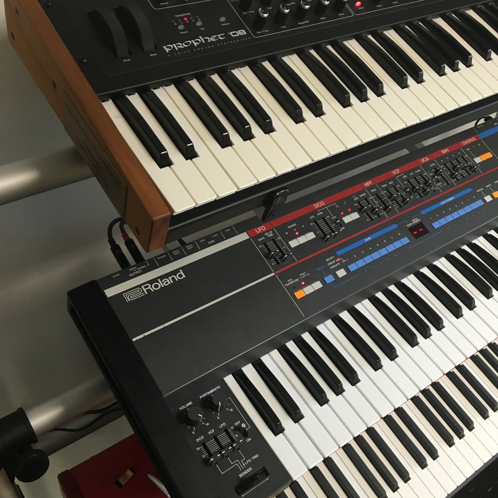
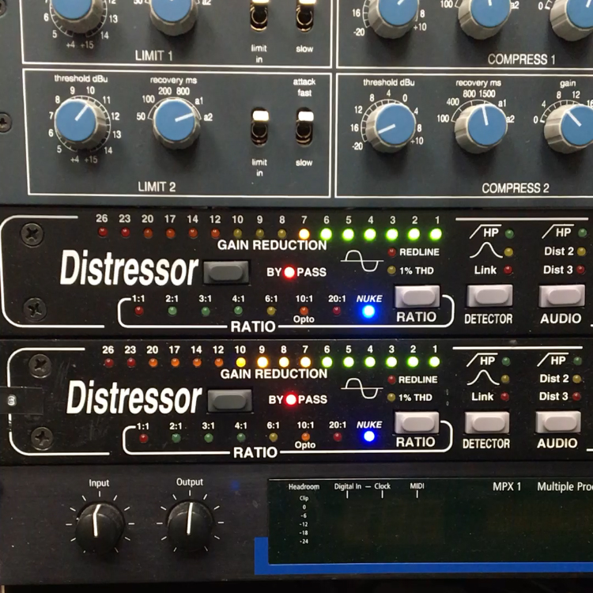
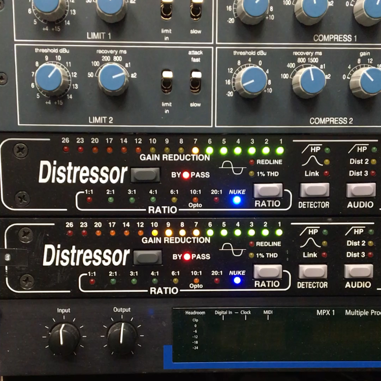
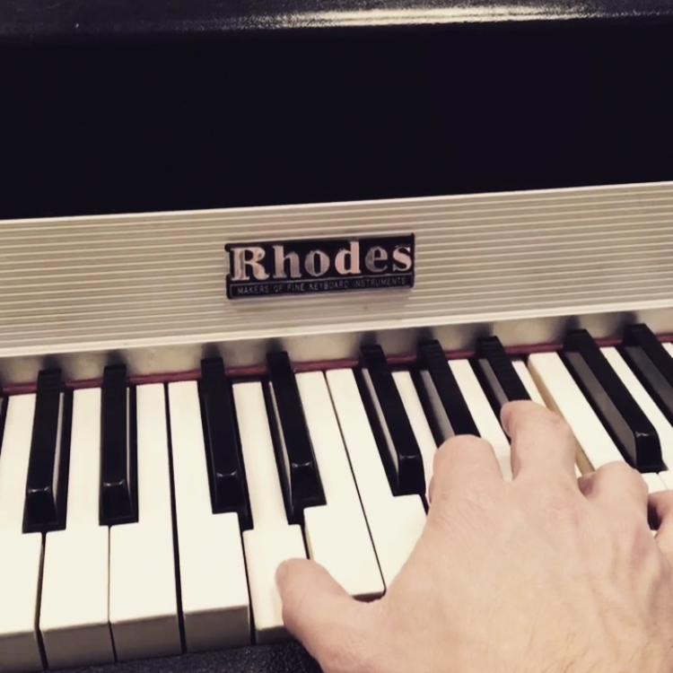

The Story of Little Boxes
Skwodam's debut EP
The Pink One
The Pink One is the first track I made for the EP. It dates back to 2016. I had the concept of the EP in mind, and ideas for all three colours but the Pink One. I started to mess around with a seventh chord arpeggio on the piano and made a Hammond sound. These two together create the basis of the track. The mood of the main chord progression was happy enough, so I decided to use this track as The Pink One.
The tonality was inspired by Hans Zimmer’s Masterclass, in which he said ‘I like writing in D’. I thought, I give it a shot and wrote a few chords with D. They move around this note, so the bass doesn’t change for a very long time. The midsection has a new tonality but is also related to the key. The return of the main motif is a tricky chord change I’m very proud of.
I also applied a production trick of Hannah V, and had the luck to meet her in London. She was kind enough to listen to the track and gave very nice feedback, which means a lot to me.

The Green One
I wrote this chord progression in my teenage years but never produced a track with it. This track was probably the biggest motivation to pursue music and production, and put me on this journey across schools and countries and lives.
When I started to work on the EP in 2016 I recorded the chord progression on a Steinway piano in a concert hall with a broken mic. I had no idea about recording back then, so I had this poor sounding and poorly played sample. I insisted on using that instead of re-recording it. Against all odds, it made it to the track. I recorded a few additional sounds with a Juno, a Nord and some Max effects. The track also got a house-like beat and a Hammond-sounding, but entirely electric bass.

The Blue One
The first version of the Blue One was born in 2018. I wrote a long chord progression and started to experiment with different drum fills. I wanted to write an intro for the track, but accidentally I exported the tracks in half speed. I decided to keep them and add many strings and pads, which subtly keep evolving.
For long the two parts were the same track, but in the eleventh hour, I decided to separate them. The intro got the name ‘Vorspiel’ and became a track on it’s own. Originally the track had programmed drums, which we replaced real ones played by Scott MacDonald, recorded in 2019 in Goldsmiths Music Studios.
 
The Yellow One
I wrote this motif for my highschool jazz-rock band, but we never actually played it. We had very good musical ideas but only managed to play one concert ever. I decided to revisit these old themes recently. We recorded demos with a laptop’s built-in mic. We covered it with tissues to prevent distortion. Surprisingly, they still work.
One of the great things about production is that I don’t need band members to play their parts: I can program drums, bass, chords and almost everything I need. It has it’s own beauty to manage band members, rehearsals, bookings, transport instruments, learn materials, go to have drinks after. But it’s also nice to not have the problems coming with these and just make every sound by myself.
The track was inspired by these times, and ends with a chaotic noisy part, exactly how we would have done as a band.


Listen to Little Boxes
Choose your favourite player
Spotify
Bandcamp
YouTube
Apple Music
SoundCloud
Amazon Music
Tidal
Deezer